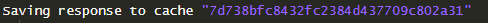

The pipr package allows to easily query the PIP API from R.
Here are a few examples to get you started:
By default, get_stats() returns all available
For the most recent data available.
get_stats()
#> # A tibble: 2,504 × 44
#> region_name region_code country_name country_code year reporting_level
#> <chr> <chr> <chr> <chr> <dbl> <chr>
#> 1 Sub-Saharan Afri… SSA Angola AGO 2000 national
#> 2 Sub-Saharan Afri… SSA Angola AGO 2008 national
#> 3 Sub-Saharan Afri… SSA Angola AGO 2018 national
#> 4 Europe & Central… ECA Albania ALB 1996 national
#> 5 Europe & Central… ECA Albania ALB 2002 national
#> 6 Europe & Central… ECA Albania ALB 2005 national
#> 7 Europe & Central… ECA Albania ALB 2008 national
#> 8 Europe & Central… ECA Albania ALB 2012 national
#> 9 Europe & Central… ECA Albania ALB 2014 national
#> 10 Europe & Central… ECA Albania ALB 2015 national
#> # ℹ 2,494 more rows
#> # ℹ 38 more variables: survey_acronym <chr>, survey_coverage <chr>,
#> # welfare_time <dbl>, welfare_type <chr>, survey_comparability <dbl>,
#> # comparable_spell <chr>, poverty_line <dbl>, headcount <dbl>,
#> # poverty_gap <dbl>, poverty_severity <dbl>, watts <dbl>, mean <dbl>,
#> # median <dbl>, mld <dbl>, gini <dbl>, polarization <dbl>, decile1 <dbl>,
#> # decile2 <dbl>, decile3 <dbl>, decile4 <dbl>, decile5 <dbl>, …
# Specify ONE country
get_stats(country = "ALB")
#> # A tibble: 15 × 44
#> region_name region_code country_name country_code year reporting_level
#> <chr> <chr> <chr> <chr> <dbl> <chr>
#> 1 Europe & Central… ECA Albania ALB 1996 national
#> 2 Europe & Central… ECA Albania ALB 2002 national
#> 3 Europe & Central… ECA Albania ALB 2005 national
#> 4 Europe & Central… ECA Albania ALB 2008 national
#> 5 Europe & Central… ECA Albania ALB 2012 national
#> 6 Europe & Central… ECA Albania ALB 2014 national
#> 7 Europe & Central… ECA Albania ALB 2015 national
#> 8 Europe & Central… ECA Albania ALB 2016 national
#> 9 Europe & Central… ECA Albania ALB 2016 national
#> 10 Europe & Central… ECA Albania ALB 2017 national
#> 11 Europe & Central… ECA Albania ALB 2017 national
#> 12 Europe & Central… ECA Albania ALB 2018 national
#> 13 Europe & Central… ECA Albania ALB 2018 national
#> 14 Europe & Central… ECA Albania ALB 2019 national
#> 15 Europe & Central… ECA Albania ALB 2020 national
#> # ℹ 38 more variables: survey_acronym <chr>, survey_coverage <chr>,
#> # welfare_time <dbl>, welfare_type <chr>, survey_comparability <dbl>,
#> # comparable_spell <chr>, poverty_line <dbl>, headcount <dbl>,
#> # poverty_gap <dbl>, poverty_severity <dbl>, watts <dbl>, mean <dbl>,
#> # median <dbl>, mld <dbl>, gini <dbl>, polarization <dbl>, decile1 <dbl>,
#> # decile2 <dbl>, decile3 <dbl>, decile4 <dbl>, decile5 <dbl>, decile6 <dbl>,
#> # decile7 <dbl>, decile8 <dbl>, decile9 <dbl>, decile10 <dbl>, cpi <dbl>, …
# Specify MULTIPLE countries
get_stats(country = c("ALB", "CHN"))
#> # A tibble: 81 × 44
#> region_name region_code country_name country_code year reporting_level
#> <chr> <chr> <chr> <chr> <dbl> <chr>
#> 1 Europe & Central… ECA Albania ALB 1996 national
#> 2 Europe & Central… ECA Albania ALB 2002 national
#> 3 Europe & Central… ECA Albania ALB 2005 national
#> 4 Europe & Central… ECA Albania ALB 2008 national
#> 5 Europe & Central… ECA Albania ALB 2012 national
#> 6 Europe & Central… ECA Albania ALB 2014 national
#> 7 Europe & Central… ECA Albania ALB 2015 national
#> 8 Europe & Central… ECA Albania ALB 2016 national
#> 9 Europe & Central… ECA Albania ALB 2016 national
#> 10 Europe & Central… ECA Albania ALB 2017 national
#> # ℹ 71 more rows
#> # ℹ 38 more variables: survey_acronym <chr>, survey_coverage <chr>,
#> # welfare_time <dbl>, welfare_type <chr>, survey_comparability <dbl>,
#> # comparable_spell <chr>, poverty_line <dbl>, headcount <dbl>,
#> # poverty_gap <dbl>, poverty_severity <dbl>, watts <dbl>, mean <dbl>,
#> # median <dbl>, mld <dbl>, gini <dbl>, polarization <dbl>, decile1 <dbl>,
#> # decile2 <dbl>, decile3 <dbl>, decile4 <dbl>, decile5 <dbl>, …By default, get_stats will only return data if a survey
is available for the requested country and the
requested year.
# Survey year available
get_stats(country = "ALB", year = 2012) # single year
#> # A tibble: 1 × 44
#> region_name region_code country_name country_code year reporting_level
#> <chr> <chr> <chr> <chr> <dbl> <chr>
#> 1 Europe & Central … ECA Albania ALB 2012 national
#> # ℹ 38 more variables: survey_acronym <chr>, survey_coverage <chr>,
#> # welfare_time <dbl>, welfare_type <chr>, survey_comparability <dbl>,
#> # comparable_spell <chr>, poverty_line <dbl>, headcount <dbl>,
#> # poverty_gap <dbl>, poverty_severity <dbl>, watts <dbl>, mean <dbl>,
#> # median <dbl>, mld <dbl>, gini <dbl>, polarization <dbl>, decile1 <dbl>,
#> # decile2 <dbl>, decile3 <dbl>, decile4 <dbl>, decile5 <dbl>, decile6 <dbl>,
#> # decile7 <dbl>, decile8 <dbl>, decile9 <dbl>, decile10 <dbl>, cpi <dbl>, …
get_stats(country = "ALB", year = c(1996,2012)) # multiple years
#> # A tibble: 2 × 44
#> region_name region_code country_name country_code year reporting_level
#> <chr> <chr> <chr> <chr> <dbl> <chr>
#> 1 Europe & Central … ECA Albania ALB 1996 national
#> 2 Europe & Central … ECA Albania ALB 2012 national
#> # ℹ 38 more variables: survey_acronym <chr>, survey_coverage <chr>,
#> # welfare_time <dbl>, welfare_type <chr>, survey_comparability <dbl>,
#> # comparable_spell <chr>, poverty_line <dbl>, headcount <dbl>,
#> # poverty_gap <dbl>, poverty_severity <dbl>, watts <dbl>, mean <dbl>,
#> # median <dbl>, mld <dbl>, gini <dbl>, polarization <dbl>, decile1 <dbl>,
#> # decile2 <dbl>, decile3 <dbl>, decile4 <dbl>, decile5 <dbl>, decile6 <dbl>,
#> # decile7 <dbl>, decile8 <dbl>, decile9 <dbl>, decile10 <dbl>, cpi <dbl>, …
# Survey year NOT available - Empty response
get_stats(country = "ALB", year = 2000)
#> # A tibble: 0 × 44
#> # ℹ 44 variables: region_name <chr>, region_code <chr>, country_name <chr>,
#> # country_code <chr>, year <dbl>, reporting_level <chr>,
#> # survey_acronym <chr>, survey_coverage <chr>, welfare_time <dbl>,
#> # welfare_type <chr>, survey_comparability <dbl>, comparable_spell <chr>,
#> # poverty_line <dbl>, headcount <dbl>, poverty_gap <dbl>,
#> # poverty_severity <dbl>, watts <dbl>, mean <dbl>, median <dbl>, mld <dbl>,
#> # gini <dbl>, polarization <dbl>, decile1 <dbl>, decile2 <dbl>, …
# Most Recent Value available
get_stats(country = "ALB", year = "MRV")
#> # A tibble: 1 × 44
#> region_name region_code country_name country_code year reporting_level
#> <chr> <chr> <chr> <chr> <dbl> <chr>
#> 1 Europe & Central … ECA Albania ALB 2020 national
#> # ℹ 38 more variables: survey_acronym <chr>, survey_coverage <chr>,
#> # welfare_time <dbl>, welfare_type <chr>, survey_comparability <dbl>,
#> # comparable_spell <chr>, poverty_line <dbl>, headcount <dbl>,
#> # poverty_gap <dbl>, poverty_severity <dbl>, watts <dbl>, mean <dbl>,
#> # median <dbl>, mld <dbl>, gini <dbl>, polarization <dbl>, decile1 <dbl>,
#> # decile2 <dbl>, decile3 <dbl>, decile4 <dbl>, decile5 <dbl>, decile6 <dbl>,
#> # decile7 <dbl>, decile8 <dbl>, decile9 <dbl>, decile10 <dbl>, cpi <dbl>, …
get_stats(country = "ALB", povline = 3.2)
#> # A tibble: 15 × 44
#> region_name region_code country_name country_code year reporting_level
#> <chr> <chr> <chr> <chr> <dbl> <chr>
#> 1 Europe & Central… ECA Albania ALB 1996 national
#> 2 Europe & Central… ECA Albania ALB 2002 national
#> 3 Europe & Central… ECA Albania ALB 2005 national
#> 4 Europe & Central… ECA Albania ALB 2008 national
#> 5 Europe & Central… ECA Albania ALB 2012 national
#> 6 Europe & Central… ECA Albania ALB 2014 national
#> 7 Europe & Central… ECA Albania ALB 2015 national
#> 8 Europe & Central… ECA Albania ALB 2016 national
#> 9 Europe & Central… ECA Albania ALB 2016 national
#> 10 Europe & Central… ECA Albania ALB 2017 national
#> 11 Europe & Central… ECA Albania ALB 2017 national
#> 12 Europe & Central… ECA Albania ALB 2018 national
#> 13 Europe & Central… ECA Albania ALB 2018 national
#> 14 Europe & Central… ECA Albania ALB 2019 national
#> 15 Europe & Central… ECA Albania ALB 2020 national
#> # ℹ 38 more variables: survey_acronym <chr>, survey_coverage <chr>,
#> # welfare_time <dbl>, welfare_type <chr>, survey_comparability <dbl>,
#> # comparable_spell <chr>, poverty_line <dbl>, headcount <dbl>,
#> # poverty_gap <dbl>, poverty_severity <dbl>, watts <dbl>, mean <dbl>,
#> # median <dbl>, mld <dbl>, gini <dbl>, polarization <dbl>, decile1 <dbl>,
#> # decile2 <dbl>, decile3 <dbl>, decile4 <dbl>, decile5 <dbl>, decile6 <dbl>,
#> # decile7 <dbl>, decile8 <dbl>, decile9 <dbl>, decile10 <dbl>, cpi <dbl>, …The fill_gaps argument triggers the interpolation /
extrapolation of poverty estimates when surveys are not available for a
given year.
# fill_gaps = FALSE (default)
get_stats(country = "HTI")
#> # A tibble: 3 × 44
#> region_name region_code country_name country_code year reporting_level
#> <chr> <chr> <chr> <chr> <dbl> <chr>
#> 1 Latin America & C… LAC Haiti HTI 2001 national
#> 2 Latin America & C… LAC Haiti HTI 2012 national
#> 3 Latin America & C… LAC Haiti HTI 2012 national
#> # ℹ 38 more variables: survey_acronym <chr>, survey_coverage <chr>,
#> # welfare_time <dbl>, welfare_type <chr>, survey_comparability <dbl>,
#> # comparable_spell <chr>, poverty_line <dbl>, headcount <dbl>,
#> # poverty_gap <dbl>, poverty_severity <dbl>, watts <dbl>, mean <dbl>,
#> # median <dbl>, mld <dbl>, gini <dbl>, polarization <dbl>, decile1 <dbl>,
#> # decile2 <dbl>, decile3 <dbl>, decile4 <dbl>, decile5 <dbl>, decile6 <dbl>,
#> # decile7 <dbl>, decile8 <dbl>, decile9 <dbl>, decile10 <dbl>, cpi <dbl>, …
# fill_gaps = TRUE
get_stats(country = "HTI", fill_gaps = TRUE)
#> # A tibble: 43 × 44
#> region_name region_code country_name country_code year reporting_level
#> <chr> <chr> <chr> <chr> <dbl> <chr>
#> 1 Latin America & … LAC Haiti HTI 1981 national
#> 2 Latin America & … LAC Haiti HTI 1982 national
#> 3 Latin America & … LAC Haiti HTI 1983 national
#> 4 Latin America & … LAC Haiti HTI 1984 national
#> 5 Latin America & … LAC Haiti HTI 1985 national
#> 6 Latin America & … LAC Haiti HTI 1986 national
#> 7 Latin America & … LAC Haiti HTI 1987 national
#> 8 Latin America & … LAC Haiti HTI 1988 national
#> 9 Latin America & … LAC Haiti HTI 1989 national
#> 10 Latin America & … LAC Haiti HTI 1990 national
#> # ℹ 33 more rows
#> # ℹ 38 more variables: survey_acronym <chr>, survey_coverage <chr>,
#> # welfare_time <dbl>, welfare_type <chr>, survey_comparability <dbl>,
#> # comparable_spell <chr>, poverty_line <dbl>, headcount <dbl>,
#> # poverty_gap <dbl>, poverty_severity <dbl>, watts <dbl>, mean <dbl>,
#> # median <dbl>, mld <dbl>, gini <dbl>, polarization <dbl>, decile1 <dbl>,
#> # decile2 <dbl>, decile3 <dbl>, decile4 <dbl>, decile5 <dbl>, …get_stats() can also be used to compute aggregate
welfare statistics for sub-regions. Only World Bank regions are
currently available, but more sub-regional groupings will become
available in the future.
# World Bank aggregate
get_stats(country = "all", subgroup = "wb_regions")
# List of World Bank regions
get_regions()Finally, a short note on how pipr uses caching. By
default, pipr caches the results of API calls in a local
cache. This is to avoid unnecessary API calls and to speed up subsequent
calls. The cache is stored in a temporary directory and is cleared after
2 hours. Practically, this means that if you call the same function with
the same arguments within 2 hours, the result will be returned from the
cache and not from the API.
Here is what the console will show when caching: 
And here is what it will show if it is retrieving a result from the cache: